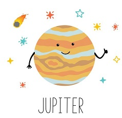
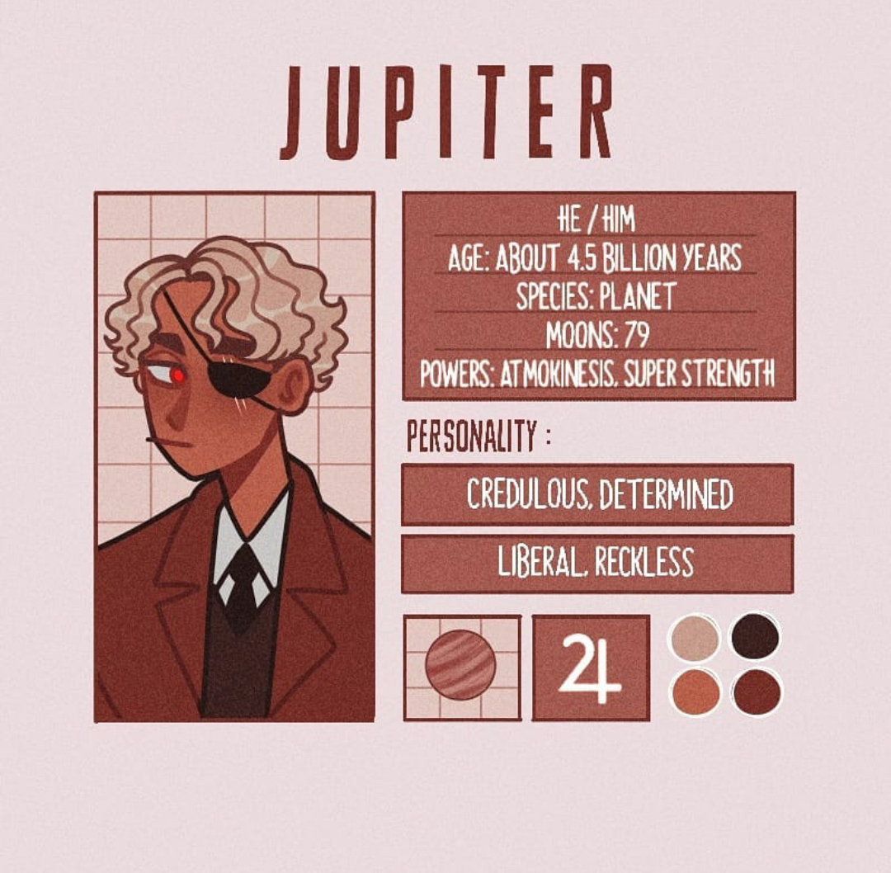

Здравствуйте!
Я Юпитер, самая большая планета, пятая по счёту от солнца я в 2,5 раза тяжелее всех прочих планет Солнечной системы вместе взятых. Мой диаметр составляет почти 143 тыс. км, что больше чем в 11 раз превышает диаметр Земли. А ещё я в 1000 раз легче Солнца и в 317 раз тяжелее Земли.
Я вращаюсь вокруг своей оси быстрее, чем любая другая планета. Сутки здесь длятся всего 9 земных часов и 55 минут. Из-за этого в моей атмосфере возникают ветры скоростью более 600 км/ч, а сам я заметно сплюснут с плюсов. Я совершаю оборот вокруг Солнца за 11,8 земных года.
Мой спутник Ганимед - крупнейший спутник в Солнечной системе. Его диаметр 5268 км, это больше, чем диаметр Меркурия, и 2 раза больше диаметра Луны. Он так велик что обладает собственным магнитным полем.
Меня, как и другие планеты внешней области Солнечной системы, называют газовым гигантом. Большая часть планеты состоит из газов: водорода, гелия, аммиака. Предположительно, водород на у меня находится как в виде газа, так и видишь жидкости.
Я - одно из самых ярких небесных тел, поэтому был известен с древности. В 7-8 вв. до н.э. вавилонские астрономы называли меня Белой звездой и связывали с верховным божеством Мардуком. Римляне также дали мне имя своего главного бога-громовержца.
Я так велик, что изучить моё внутреннее строение наука пока не в состоянии. По предположениям учёных, в центре находттся каменное ядро, которое тяжелее Земли в 10 раз. Вокруг ядра находятся слои металлического и жидкого водорода, а над ними - газовая атмосфера. На мне даже иногда бывают штормы грозы с молниями и полярные сияния.
Юпитер
- Пол: Мужской
- Возраст: 4.5 биллионов лет
- Спутник: Есть (79 шт.)
- Способности: Супер сила, атмокинез(способность влиять на погодные условия)
- Качества: Доверчивый, решительный, свободолюбивый, безрассудный
- Любимые цвета: Тёплые оттенки
